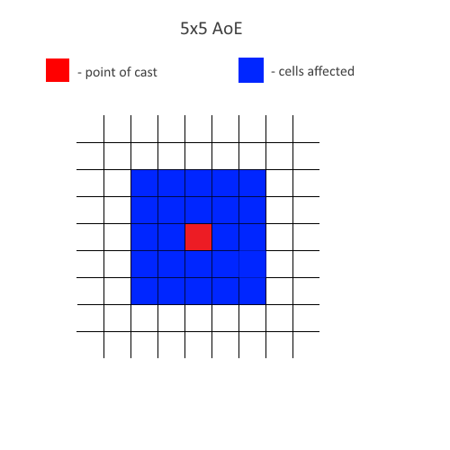

Renewal Skills Guide
Guide Overview
Hi, I'm ggboyz and I'm writing this guide to share my knowledge of Renewal, especially skill mechanics/functionalities which I have accumulated over the years. This guide will talk about the notable/underappreciated skills of each class and aims to bridge the gap between newer and older players of Renewal to improve the competition and knowledge of the average player on NovaRO.
Disclaimer: The guide may be relatively wordy, but it is also important to understand the reasons and thought processes behind making certain choices.
Message to Readers: Currently holding off Rebellions and Dorams since there could likely be more fixes/updates in the future on these classes.
Terminologies
AoE - Area of Effect
BG - Battlegrounds
WoE - War of Emperium (think of Guild vs Guild to compete for a certain objective)
PvM - refers to monsters and bosses in fields, dungeons and instances
PvP - refers to places like PvP arena, BG, WoE
DoT - Damage over Time
ecall - Emergency Call skill which is usable by Guild Leaders only in BG Conquest and WoE
CC - crowd control in most cases, otherwise commonly used to refer to Sura Cursed Circle or Genetic Cart Cannon
DPS - Damage per second
ASPD - Attack Speed
General Knowledge
- For more general Renewal knowledge, visit Introduction to Renewal wiki page.
- You can use 2 of the same accessories (e.g. 2 Hiding Clips) and use Hiding then swap Accessory and Hide again with no animation delay. Swapping accessory will remove the skill, so if you have 1 Sight and 1 Hide, using Sight then swapping accessory will remove the Sight effect even if visually it still shows.
- Always use Box of Sunlight in WoE/BG so people don't get past you without notice.
- Put /sit on your macro (Alt + M), and you can change the macro key in Shortcuts. Good to deal with skills that force /sit you, like Windmill and Moonslasher.
- Put @refresh on your macro (Alt + M) to deal with situations where you are poslagged.
- Unlike Pre-Renewal, Emperium is not affected by skills that heal and safety wall.
- Often times newer players think "bugged skill" especially when it comes to AoE skills. AoE in RO is calculated starting from the center of the AoE. If a skill's AoE is 9x9, it means that the reach of the skill is (9-1)/2 = 4 linear cells away from the point of cast, then forming a square. 
Arch Bishop
Arch Bishop is a class that excels in supporting its party members. They can also sub as tanks and occasionally play as a damage dealer although not optimal.
Arch Bishop
| Skill | Type | Recommended Level | Description |
|---|---|---|---|
 Adoramus Adoramus
|
Damage | 0, 7, 10 | Consume 1 Blue Gemstone to deal Holy element magic damage on a target (400% ~ 1030% MATK) and targets around it (Lv 1-5: 3x3 AoE) (Lv 7-10: 5x5 AoE). Has 4% ~ 40% chance of inflicting Decrease Agility and/or Blind on the target. Higher Base Lv increases the damage, while higher Job Lv increases the chance of inflicting debuffs. Deals 200% damage if the caster equips the complete Mace of Judgement set. Has 2 second Skill Cooldown. |
 Ancilla Ancilla
|
Utility | 1 | Consume 1 Blue Gemstone and 10% of you Max SP to create Ancilla. You can only carry 3 Ancilla in your inventory, and it is character-bound. Ancilla can be consumed to increase healing effectiveness by 15% and SP recovery by 30% for 60 seconds. Ancilla is consumed to cast Epiclesis. Pre-requisite for Epiclesis and Adoramus. |
 Canto Candidus Canto Candidus
|
Buff | 3 | Bestows the effects of Increase Agility on the caster and party members in a 7x7 ~ 31x31 AoE centered on the caster. Caster's Job Lv increases the AGI bonus (AGI +1 every 10 Job Lv, up to AGI +18 if cast by an Arch Bishop at Job Lv 60). Canto Candidus uses the highest level of Increase Agility the caster has learned. Does not affect Mechanics in Madogear. |
 Clearance Clearance
|
Buff/Debuff | 1 ~ 5 | Has a 68% ~ 100% chance to remove nearly all buffs and debuffs from a target, such as Steel Body, Berserk/Frenzy, Mandragora Howling. Does not work against Boss monsters and can not be used on players outside your party. Pre-requisite for Silentium. Has 10 second Skill Cooldown, which is removed if the caster equips +6 Vellum Bible, and is inside WoE/PvP maps. |
 Clementia Clementia
|
Buff | 3 | Bestows the effects of Blessing on the caster and party members in a 7x7 ~ 31x31 AoE centered on the caster. Caster's Job Lv increases the STR, INT, and DEX bonus (STR, INT, DEX +1 every 10 Job Lv, up to STR, INT, and DEX +16 if cast by an Arch Bishop at Job Lv 60). Clementia uses the highest level of Blessing the caster has learned. Pre-requisite for Ancilla. |
 Coluceo Heal Coluceo Heal
|
HP Recovery | 3 | Restores HP to the caster and party members in a 7x7 ~ 31x31 AoE centered on the caster. Coluceo Heal uses the highest level of Heal the caster has learned. Restores more HP if there are more members in the party. Does not affect Mechanics in Madogear, players under the Berserk/Frenzy status, and players wearing Evil Druid Card armor. Pre-requisite for Renovatio. |
 Convenio Convenio
|
Utility | 0, 1 | Summons all party members in the same map to the caster. Convenio does not work in WoE/BG/PVP and maps that prevent teleportation. Convenio can no longer be used on Satefy Walls or any other ground units. Useful for moving a party into a more populated monster area on a large map in Gramps, helping a group with quest chains, or getting to deeper levels of Bio Labs. |
 Duple Light Duple Light
|
Self-buff | 5 - 10 | Summons a pair of glowing light spheres that has a 12% ~ 30% chance to inflict additional damage when the caster uses melee physical attacks, lasting for 90 ~ 360 seconds. One sphere deals ranged physical damage (165% ~ 300% ATK) and uses weapon element. The other sphere deals Neutral element magic damage (440% ~ 800% MATK). Pre-requisite for Expiatio. Shadow Chasers will request you to use Duple Light and attack them so they may Reporduce it. You only need to auto attack hit them with level 1-5 for them for them to obtain level 10 of this skill. |
 Epiclesis Epiclesis
|
HP & SP Regeneration | 1, 3, 5 | Epiclesis consumes 1 Ancilla and 1 Holy Water to cast. Creates a 5x5 AoE on the ground that resurrects dead players, increases MaxHP by 5% ~ 25%, regenerates 3% ~ 5% HP and 2% ~ 4% SP every 3 seconds, and reveales hidden targets every 5 seconds. Epiclesis lasts for 18 ~ 30 seconds, and can be used to heal players under Frenzy/Berserk status. Pre-requisite for Sacrament and Eucharistica. |
 Expiatio Expiatio
|
Buff | 1 ~ 5 | Enables the target's physical and magical attack to pierce 5% ~ 25% of the enemy's physical and magical defense, lasting for 30 ~ 150 seconds. Pre-requisite for Sacrament and Eucharistica. Expiatio is now treated as magic defense ignore and will be combined with other bonuses (rather than being multiplied). For example: Neo Punk combo (50%) + Expiatio at level 5 (25%) gives 75% magic defense ignore in total. Expiatio also works the same for defense. |
 Highness Heal Highness Heal
|
HP Recovery | 2 ~ 5 | Restores a large amount of HP to a target (200% ~ 320% based on Heal Lv 10). If /noshift is turned on, deals Holy element magic damage on Undead element monsters. Has 3 second Skill Cooldown that can be removed when equipping Light of Cure enchanted with Cure Lv 1. Pre-requisite for Offertorium and Epiclesis. Useful to use against Suffering Khalitzburg Knight if a player accidentally triggered it's AGI UP (!!). Finishing it off for the damage dealer will move the party faster through the instance. |
 Judex Judex
|
Damage | 0, 5 | Deals Holy element magic damage on a target and enemies in a 3x3 AoE around it (340% ~ 500% MATK). Higher Base Lv increases the damage. Pre-requisite for Adoramus. Scales with our Tomb of the Fallen Old Mitra, can be reduced with Temporal Boots of Dexterity and great as a finisher to Adoramus survivors. |
 Lauda Agnus Lauda Agnus
|
Buff/Recovery | 4 | Increase the caster's and party members' MaxHP by 4% ~ 10%. Has 70% ~ 100% chance to remove Blind, Burning, Crystallization, Freezing, Frozen, and Stone Curse. Pre-requisite for Lauda Ramus. Its skill cooldown is reduced if the caster wears the complete Wand of Affection set, Protection Staff II set, or +6 Vellum Bible. |
 Lauda Ramus Lauda Ramus
|
Buff/Recovery | 4 | Increase the caster's and party members' Critical Damage by 5% ~ 20%. Has 70% ~ 100% chance to remove Sleep, Deep Sleep, Howling, Silence, and Stun. Pre-requisite for Clearance. Its skill cooldown is reduced if the caster wears the complete Wand of Affection set, or +6 Vellum Bible. |
 Offertorium Offertorium
|
Self-buff | 1 ~ 5 | Increases the effectiveness of Heal, Sanctuary, Coluceo Heal, and Highness Heal by 30% ~ 150%. Increases SP cost of all skills by x2.2 ~ x3. Removes various debuffs from the caster (Bleeding, Blind, Burning, Chaos, Curse, Freezing, Hallucination, Poison, Guillotine Cross Poisons, Mandragora Howling,). Removes Magnificat when cast. Offertorium lasts for 90 seconds, or until it's casted again, or until the caster uses/receives Magnificat. |
 Oratio Oratio
|
Debuff | 5 ~ 10 | Has a 45% ~ 90% chance to temporarily reduce the Holy element resistance of all enemies in a 31x31 AoE centered on the caster by 2% ~ 20%. Oratio affects Boss monsters and hidden enemies. Pre-requisite for Expiatio. |
 Praefatio Praefatio
|
Defensive | 5 ~ 10 | Applies barriers that block melee and ranged physical damage on the caster and all party members. The barrier blocks 7 ~ 16 hits, and has 30% of the target's MaxHP as durability. Praefatio can be re-casted after 13 ~ 40 seconds. The barrier's defense is increased with more members in the party. Praefatio can not be stacked with Assumptio. The highest level Praefatio will overwrite the duration of lower level Praefatio, and lower level Praefatio cannot refresh the duration of higher level Praefatio. Praefatio and Kyrie Eleison interact in this way as well. Using Praefatio and Kyrie Eleison at the same level will refresh the barrier's duration. Pre-requisite for Oratio. Getting this at level 5 is preferred because level 10's cooldown is very very long. Your average damage character will reach the 30% HP barrier limit before 16 max hits. |
 Renovatio Renovatio
|
HP Regeneration | 1 | Regenerates 5% MaxHP on the caster and party members every 5 seconds for 90 seconds. Pre-requisite for Highness Heal. This negates Berserk's HP lost and is great when your party and you roam separately. |
 Sacrament Sacrament
|
Buff | 5 | Reduces the target's Fixed Cast Time by 10% ~ 50%, lasting for 60 ~ 180 seconds. Lower level Sacrament can not refresh the duration of higher level Sacrament. Using @showbuffs you should at minimal see $ = Sacrement + = Clementia _ = Canto Canidus. When in doubt throw it on everyone, your Minstrel/Wanderers need it for Death Valley too. |
 Silentium Silentium
|
Debuff | 0 ~ 5 | Applies Lex Divina (i.e. inflicts Silence) on all enemies within 9x9 ~ 17x17 AoE centered on the caster. The chance of inflicting Silence is affected by the enemy's Base Lv, VIT, and LUK. Can also remove Silence from targets within the AoE. Has 15 second Skill Cooldown. To this day I have yet to successfully know what this skill is used for. Level 5 maxed stats in Prontera Culvert does not even give this skill 100% chance. |
 Vituperatum Vituperatum
|
Debuff | 1 ~ 5 | Consume 1 Blue Gemstone to apply Lex Aeterna effect on a target and targets around it (Lv 1-3: 3x3 AoE) (Lv 4-5: 5x5 AoE). Higher skill level reduces the skill's SP cost (144 ~ 78 SP) and fixed/variable cast time. Has 5 second Skill Cooldown. Skill level is not selectable. This skill does not require you to have Lex Aeterna as a pre-requirement. |
Removed Skill
| Skill | Type | Levels | Description |
|---|---|---|---|
| Eucharistica | Passive | 10 | Increase physical attack and physical defense against Demon race and Shadow property monsters by 1% ~ 10%.
Replaced by Vituperatum. |
Class Guides
General Arch Bishop Guide everyone is free to add helpful tips!
Slightly out of date Reno's Full Support Arch Bishop Guide Creator only editable
Slightly out of date Reno's Damage Arch Bishop Guide Creator only editable
Genetic
Genetic is an all-round class which excels in providing utility and offense to a party. Genetic is also able to craft important potions/food which are critical especially in the competitive aspect of RO.
Class Skills
| Skill | Effects | Tips & Notes |
|---|---|---|
| This skill allows you to obtain specific items from a list in exchange for a set of given items. | Brewing Only. One notable exchange is: 40 Skel-Bone + 50 Orcish Vouchers => 9 Alcohol. You may use X sets at one go to obtain more of the result item. e.g 200 Skel-Bone + 250 Orcish Vouchers => 45 Alcohol (5 sets). | |
| This skill allows you to craft +20 foods which are very important in reaching instant variable cast time. | Brewing Only. Max it as you can brew them 10 at a time with a chance get brewing additional 1 or 2 if your stats are high enough. | |
| This skill allows you to brew potions which are useful in general and items which are core to Genetic gameplay. | Brewing Only. Max this for better success rates. Notable items: | |
| This skill allows you to create bombs which can be used in conjunction with Item Sling for unique effects. | Brewing Only. Max it as you can craft 10 bombs at a time. | |
| Very useful in conjunction with Bomb Creation (above). Allows you to utilise the effects of bombs. | PvM: Not recommended to level.
PvP: Recommended to add this for bomb usage. | |
| This skill boosts your movement speed which increases per level (up to 100% at level 5). This buff is removed by Decrease Agi and can remove Decrease Agi and re-casted again to buff yourself. | Always max. The movement speed bonus is too valuable to not max this in any situation, when it is akin to having speed potion effect. | |
Does periodic damage on target under this skill's effect for a duration and restores up to 30% of DoT as HP. Max range for effect to stay is 12. If exceeded, the debuff is removed from the target. Requires 1  Bloodsuck Plant Seed Bloodsuck Plant Seed
|
PvM: Leveling this skill is optional. PvP: Valuable in interrupting cast times and even ecalls, getting level 3 is sufficient. | |
Very strong AoE debuff skill that causes affected enemy players to have fixed cast time on ALL skills casted. 75% base success rate at level 5, reducible by VIT and LUK, with minimum success of 10%. Requires 1  Mandragora Flowerpot Mandragora Flowerpot
|
PvP only. Max this for better success rate, longer duration and stronger fix cast time increase.
Did You Know? Kagerou/Oboro is the only class that can ignore this debuff with 16th Night buff at level 4/5 to keep it permanently up. | |
| Ranged skill which does damage in AoE (7x7 at level 5). Scales with INT. Requires Cannonball ammunition. Ignores Flee. | PvM: Max this. This skill is extremely useful in farming and killing mobs due to its low cost and efficiency compared to other methods.
PvP: Not recommended to use this in PvP. Players are able to stack 65% to 76% demi-human resist which will negate most of your damage. | |
| Hell Plant | 3x3 AoE skill that works like a trap, this does pure damage in all but 2 cases: Ghost property armor gives 50% reduction and Energy coat reduces this damage, otherwise you take full damage. Blocked by Safety Wall. Scales with INT. Requires 1 |
PvM: Not recommended to get this as the skill does fixed damage up to 30k+ if you are fully buffed. You can do more with Cart Cannon or Acid Bomb PvP: Max this. It is one of the best DPS skills in the game and one of the most broken due to the very limited ways to reduce damage. |
Lays a trap on the ground that will snare the enemy when activated and deal DoT. Requires 1  Seed of Thorny Plant Seed of Thorny Plant
|
PvM: This skill is useful for snaring bosses in instances. Consider adding this. PvP: This skill is useful for snaring players. Consider getting some levels on this. | |
| Ground target skill that summons vines (8 at lv 10) with 5x5 AoE randomly in a 9x9 AoE which deal Earth property damage. This skill can remove ground effects. Requires 1 Seed of Thorny Plant
|
PvM: This skill can be pretty interesting to use for its Earth property and it scales with ATK. PvP: This skill is usually added to deal with skills like Bloody Lust, Land Protector, Manhole etc. Consider getting some levels on this skill. | |
| Ground targeted skill that summons a wall of thorns around the target which will knock them back when they come into contact with it. Changes to Fire Wall when it is hit by a Fire property attack. Can damage hidden/cloaked targets. Requires 1 Seed of Thorny Plant
|
PvM: I find it hard to think of scenarios where you can use this as boss monsters cannot be knocked back. PvP: Very useful against players who use Hide accessories. | |
| Powerful debuff skill with big AoE (full screen splash at level 5) with a high chance to cause screen to be flipped upside down and -HIT. 1s cooldown at level 5. Requires 1 |
PvM: Monsters are not affected by this. Do not level this. PvP: Very valuable disrupting skill which is also spammable. | |
Ground targeted skill that creates a 5x5 AoE fire which can be used in conjunction with Fire Expansion (below) for additional effects. Requires 1  Bottle Grenade. Bottle Grenade.
|
PvM: Grab at least level 3 and consider maxing if you have additional points to spare. PvP: Grab level 3 to conserve points. | |
| When used on Demonic Fire, this skill gives different effects based on the level used. Lv 4: Reduces Flee and HIT rate of targets inside Demonic Fire by 50%. Drains 5% HP every 2 seconds. Requires 1 |
PvM: You may max this as the AoE AD is good when fighting groups of high VIT mobs. PvP: You may consider maxing this for the AoE Acid Bomb to break Barricades or Guardian Stones. Level 4 effect can be useful also. |


Homunculus S TLDR guide
Full details: Homunculus S
| Homunculus | Race | TLDR |
|---|---|---|
| Eira | Angel
|
Overed Boost - Fixes you at 189 ASPD, 500 Flee. Silent Breeze - Cures annoying debuffs like Harmonize. |
 Dieter Dieter
|
Formless
|
Pyroclastic - Gives you +(Homun_lv + skill_lv * 10) ATK and endows weapon with Fire property. Breaks weapon when duration ends unless weapon is unbreakable or under the effects of Chemical Protection. Granitic Armor - Gives % damage reduction. |
 Bayeri Bayeri
|
Brute
|
Stein Wand - Casts Safety Wall on both player and homunculus. Good for tanking. |
| Sera | Insect
|
Needle of Paralyze - Snares target and reduces their DEF. Summon Legion - Summons a group of insect mobs to attack enemies. Luciola Vespa at Level 5. |
 Eleanor Eleanor
|
Demihuman
|
Sonic Claw - Strong DPS skill. Typically used to farm/leech alt characters. |
Class Guides
To be added.
Guillotine Cross
Guillotine Cross is a class that excels in inflicting poisons on enemies and can be good at dealing damage with sufficient gear. They are also able to support their allies in PvP in specific situations. I consider this class a PvP-centric class although it is able to solo a handful of instances on its own.
Class Skills
| Skill | Effects | Tips & Notes |
|---|---|---|
| Removes the GX Poison on the target. Consumes 1 |
PvP only. Extremely valuable skill when going against other GX. This can save your team too. | |
| Katar Only. Deals damage in a small AoE (5x5 at level 5, otherwise 3x3). Stacks 1 Spin Count per use up to 10. Spin Count is reset to 0 on walking or after 3s. | PvM: Bread and butter skill for farming and instances. PvP: Max this if you are playing a non-Crit focused build, otherwise you may opt not to add this. | |
| Cross Impact(CI) | Good burst damage skill. Can be animation cancelled. Damage modifier is halved under effect of Enchant Deadly Poison. | PvM: Could be good to one-hit weak mobs but it can be SP intensive. Maxing this skill is optional, but I prefer to max it with spare points. PvP: Max this if you are playing a non-Crit focused build, otherwise you may opt not to max this. |
| GX version of a worse Auto Guard. On trigger allows you to use Counter Slash. Interrupts walking movement and auto attacks when the effect is triggered. | PvM: Useful in mitigating damage especially in non-Crit builds which rely on skill usage. PvP: Can be useful in blocking fatal hits like Crush Strike and Asura Strike. | |
| Requires Weapon Blocking to trigger before you can use this skill. Deals damage in 3x3 AoE around the player. Scales with AGI. This skill can crit. Damage modifier is halved under effect of Enchant Deadly Poison. | PvM/PvP: Max this if you own a +9 Oni Horns. Otherwise the after-cast delay on this skill makes it a weaker DPS skill compared to RC. Tip: Equipping a +9 Oni Horns gives you 10% chance to auto-cast the highest level of Counter Slash when auto attacking. Together with level 5 Weapon Blocking, the damage boost to this skill is very high. | |
| Deals damage and inflicts a debuff on the target for 5s which increases melee damage received (+150% at level 5). 60s cooldown. | PvM/PvP: Max this as it will boost your DPS skills such as RC, CI or CS. It also increases the melee damage of other players on the target. | |
(CRS) |
Katar Only. Consumes all Spin Counts from Rolling Cutter to deal a powerful burst of ranged damage to a target. Deals more damage if more Spin Counts are stacked. Range 13 at level 5. Scales with AGI. Requires at least 1 Spin Count to use. | PvM/PvP: Either max it or ignore it. You can stack charges on Rolling Cutter and Backslide into range of a target before using Cross Ripper Slasher. Not very efficient for DPS. Backslide trick does not work in BG and WoE. Tip: At 193 ASPD and under the effect of well-stat Bragi, you can press RC then CRS in quick succession, making it possible to do some form of range DPS if you get your timing right. |
| Boosts your flee by a huge amount and gives you a chance to avoid magic damage (50% chance at level 5) at the cost of . Ignore Vacuum Extreme effects. Inflicts a debuff that reduces ASPD and Flee by half when the buff ends. | PvM: Very useful skill to have when tanking mobs/bosses that deal magic damage. Max this if you have enough points. PvP: Valuable in avoiding damage from Sorcerers and Warlocks. However, it can be dispelled. Maxing is optional but can do wonders. | |
| Increasing levels of this skill unlocks a wider variety of poisons that can be crafted and gives increased success rates of crafting poisons. Each level of this skill increases the duration of Enchant Deadly Poison by 3s. See link for full list of poisons and effects. | Brewing: Max for optimal success rates. PvM: Leveling this skill is optional unless you want to use the Poison skills or extend EDP duration. | |
| Coats your weapon with a New Poison. | PvM: Not required to max. PvP: Useful in spreading poisons to enemies if you are going Crit build. | |
| Deals damage to the target and has a high chance to apply the New Poison on them. Removes the New Poison from weapon on damage dealt. | PvM: Useful for farming instances like Geffen Magic Tournament PvP: Useful for applying poisons such as Leech End for DoT which can be frustrating for players who do not have fast cast times. | |
| Cast a 5x5 AoE poison cloud that gives 50% chance to apply the GX poison every 2 seconds. | PvM: Not too sure how you would use it most of the time, situational usage. PvP: Good in WoE or BG Conquest where there is concept of defense and sieging. Good for zone control or slowing down others who are pushing. |


Class Guides
The Modern Day Royal Guard- by RealSlim
Royal Guard
Royal Guard is a class that excels in supporting and in being a beefy tank that can absorb damage in place of its allies with Devotion. Royal Guard can also prove to be a strong damage dealer with the right gears and stats.
Class Skills
| Skill | Effects | Tips & Notes |
|---|---|---|
| Requires Shield to cast. Useful utility skill that removes ground effects in an AoE (increases with level) and deals Earth damage to enemies. Low chance to break your shield. Reduces the DEF and ASPD of damaged targets by 25% | PvM: Consider getting some levels. Useful in helping to remove annoying Safety Walls and Pneuma that some bosses use. PvP: Max this. The removal of traps, Manholes and other ground effects can be very helpful to the team. | |
| Requires Spear to cast. Ranged attack that causes you to 'snap' to the target and deal a critical hit. Inflicts an additional effect based on level used. Success rate of additional effect and damage scales with AGI. | PvM: Can be useful sometimes when mob/boss use NPC_AGIUP. PvP: Lv2 is strong vs Suras for sphere removal. Lv3~5 are more useful in BG to break gears where there are few Genetics for FCP. | |
Endows a target and fellow party members with Holy property armor in 3x3 AoE. Requires 2  Holy Water. Holy Water.
|
PvM: Generally useful since Holy gives a 75% multiplier when you receive Water/Fire/Earth/Wind element damage. Consider getting some levels. PvP: Same reasons as above, especially more so for players who default Marc so you can get both unfrozen and holy property at the same time. Consider getting some levels. | |
| Grants a 7x7 AoE status that cause yourself and party members in the area to be immune to damage, be rooted and unable to perform any action. Regens % HP while under this status. | PvM: Usually not advisable to take this if you are tanking since this skill puts you out of combat, which means that aggro will switch to another player. PvP: Clutch use against Mechanic's Suicidal Destruction, but otherwise finds very little usage. | |
| Prestige | Gives a huge amount of DEF and also gives a chance to avoid magic damage based on INT, LUK and level of Defender | PvM/PvP: This skill is pretty hard to pass up on, max this. The exception may be if you are going for an Inspiration build as Prestige and Inspiration cannot stack. |
| Trample | Destroys traps in 5x5 AoE. Trap effects will be triggered and affect you if you are within the trap effect's AoE. | PvM: Not very useful in most situations but is required for Prestige. PvP: Useful against Rangers and Genetics to remove their traps. The AoE is smaller than Earth Drive (7x7) but has no cooldown. This skill does not remove the effect of any trap except for Ankle Snare and Doram's Silvervine Root Twist. |
| Shield Spell | Requires Shield to cast. Casts a random spell out of 3 based on the level used. Lv 1: Depends on Shield DEF |
PvM: Most notable will be the use of Lv 1 as it can give a huge boost of ATK, making Royal Guards able to deal powerful damage even with basic gears. PvP: Most notable will be the use of Lv 3 in places like BG as the 100% armor break is very frustrating for players on the receiving end when used in conjunction with status effect cards like |
| Banishing Point (BP) | Requires Spear to cast. Ranged skill that can be spammed based on ASPD. Higher level of Bash increases damage of this skill. Range 7. | PvM: Often maxed for general use. Can even be used for killing bosses. PvP: Not used often unless very well geared. The times when it is used are often also together with Inspiration due to the ATK and stat buff. |
| Requires Spear to cast. Ground targeted AoE skill that does up to 3 hits. Level of Spear Quicken increases damage of the 1st hit. STR and DEX increases the damage of the 2nd hit. 3rd hit occurs if the target is knocked back (does not have 3rd hit in WoE/BG). | PvM: Max this for farming and mob leveling. PvP: Powerful burst skill which is also spammable when under Bragi. | |
| Requires Spear to cast. Target an enemy and deal ranged damage in a 11 x 3 (length x width) AoE in a straight line. Damage increases with STR. | PvM: Useful skill to use for damaging mobs around as you lure or kite around. The difference with Banishing Point is the AoE, and this skill has a cooldown. PvP: Not recommended to add, there are other more important skills to put your points in. | |
| Requires Spear to cast. Swing your spear around and deal damage in a 3x3 AoE with a chance to force /sit on enemy players. Prevents monster movement for a short duration. Damage increases with Overbrand level. | PvM: Can be somewhat useful to stop monsters in their tracks, but often not used. PvP: Often used to disrupt player actions, since some players respond very slowly to the force /sit. | |
| Exceed Break (EB) | This skill gives you a buff that will increase the damage of your next auto attack by a huge amount. Buff cancels on weapon switch and on hit or miss. | PvM: Not often do I see this being used, but I suppose it could be a pretty fun build to try out when stacking Crit. PvP: This skill is often used to one-hit unsuspecting players. Can be very powerful when you have a strong weapon and good Crit and Critical Damage stacked. |


Class Guides
To be Added
Sura
Sura is a class that excels in support in PvP and can also deal huge amounts of burst damage if well geared and with sufficient buffs.
Class Skills
| Skill | Effects | Tips & Notes |
|---|---|---|
| Powerful CC ability that can lock up to 15 enemies in an AoE (7x7 at level 5) for a duration (7s at level 5). Enemies affect by this ability can only use items. This effect ends prematurely if the Sura uses another skill. | PvM: It can be useful for luring then locking a group of mobs. Do note the HP loss when using this skill. Consider maxing. PvP: Max this. This skill can turn the tables of fights completely. | |
| Uses 1 Spirit Sphere. Slam the ground to deal melee damage in an AoE (11x11 at level 5). This skill can damage hidden targets. | PvM: Not many uses for this skill in PvM, so not recommended to add. PvP: Situationally useful to deal with Chasers if you have a decent level of Earth Shaker to remove them from Chase Walk and Hiding. | |
| Damage targets in 5x5 AoE around you and applies force /sit on players or stuns monsters (boss/MvP are not affected). | PvM: You may add this with spare point. PvP: Very useful skill to have which allow you to force /sit players to disrupt their actions. | |
| Uses 1 Spirit Sphere per level. Grants a buff that gives you a high chance to evade a single instance of range/magic damage and snaps you beside the target instantly. This buff does not refresh if the buff already is active. | PvM: Very difficult to use or finds little uses, not recommended to add. PvP: Consider getting some levels of this to jump to those pesky Rangers, Rune Knights and even Warlocks. | |
| Uses 2 Spirit Spheres. Grants a buff that gives you a high chance to counter a single melee attack. Does not work on boss monsters. | PvM: Not recommended to level this at all as you usually will mob and it does not work on bosses. PvP: Consider getting 1-2 points if your skill build allows it to deal with skills like Crush Strike which is popular in BG. | |
| Flash Combo | Uses less Spirit Spheres based on level learned. Casts Dragon Combo, Fallen Empire, Tiger Cannon then Skynet Blow in quick succession on the target. You cannot perform any other action during the time of combo execution. | PvM: Very valuable skill as it does not drain % HP and SP like the manual Tiger Cannon combo, but this skill does not apply combo bonus. PvP: Not recommended to get due to being unable to respond to any threat during the combo execution. |
| Absorbs all spheres in 5x5 AoE around you. Regenerates 1% MSP per sphere absorbed. | PvM: This is one way to regenerate your SP, but it's somewhat slow as well. PvP: This skill is useful to prevent a Sura from combo-ing. | |
| Deals damage in an AoE (15x15 at level 5) with a chance to inflict the Fear status. This skill removes the Wanderer/Maestro song effects. | PvM: Not much of a use for this, sadly. PvP: Can be useful to remove your enemies' buffs. Situational to add or even max. | |
| Consumes 5 spheres and %MSP. Deals physical damage to your target. Lower HP grants additional damage to the skill. Combo: Dragon Combo > Fallen Empire > Gates of Hell |
PvM: Not very useful due to the high sphere and MSP cost. PvP: You can release 3 GoH in quick succession while under Magic Strings for quick bursts. | |
| Requires Fury state. Consumes 2 spheres. Deals physical melee damage to your target's HP and SP while consuming a portion of yours. Deals twice the damage when used as part of a combo. SP drain is based on 10% of damage dealt. Combo: Dragon Combo > Fallen Empire > Tiger Cannon |
PvM: One of your primary skills to use when leveling or farming. Typically used together with HP/SP leech gears such as  Rideword Hat [1] and Rideword Hat [1] and  Thanatos Hammer [1] Thanatos Hammer [1]
PvP: Your primary offensive burst skill. Usually used as part of a combo to deal x2 damage. |
Class Guides
To be added.
Kagerou/Oboro
Kagerou and Oboro are a niche class that each provide various debuffs and buffs unique to their class while also sharing some skills.
Class Skills
Legend
K: Kagerou, O: Oboro, KO = Kagerou/Oboro
| Skill | Class | Effects | Tips & Notes |
|---|---|---|---|
KO
|
Requires at least 1 active Charm. Place a magic circle with 5x5 AoE at the targeted location. Effect varies based on type of Charm used. Consumes all charms and duration increases based on number of charms used. | PvM: I think it can find some uses when it comes to mobbing, using effects like Sleep (Wind), Frozen (Ice) or Stone Curse (Earth) PvP: Very strong utility skill which makes moving through an area covered with this skill a nightmare. | |
KO
|
Melee skill that damages a target then dispels the Soul Link buff. | PvP only. Use this on Shadow Chasers who are linked as this is the only way to deal with Rogue Link. | |
KO
|
WoE only. Chance to turn your target into a Poring and reduce their stats for a duration. While in this state, target cannot change equipment. | PvP only Very powerful skill to disable players from switching which could be a matter of life and death for classes that switch gears often. | |
| Illusion-Shadow | KO
|
Creates an afterimage and backslide for a number of cells based on level used. Backslide effect works even in WoE/BG. | PvM: This skill can be used for kiting. PvP: This skill can be useful to avoid burst damage such as Tetra Vortex and Asura Strike if timed well. |
KO
|
Gives a chance to reduce target's HP by a % and puts them under Curse which bypasses stat resistance. Also has a chance to inflict Coma(?). INT reduces the chance of being affected. | PvP only. This skill can be very frustrating to deal with for players who do not use items like  Panacea or Panacea or  Royal Jelly Royal Jelly
| |
| 16th Night | KO
|
Removes all fixed cast time on skills and gives -50% variable cast time while the buff is active. This skill also gives some MATK based on level used. | PvM/PvP: Useful to get at least level 4 as duration > cooldown so you can have the buff permanently. Tip: This skill allows you to ignore the effects of Mandragora Howling. It also makes Kagerou/Oboro the class that can hit instant cast most easily under Magic Strings |
| Pure Soul | KO
|
Recovers your HP and SP quickly for 10s. Immobilises you and gives you a chance to avoid damage. | PvM/PvP: Max this. This skill is very difficult to pass up in any situation due to the HP/SP regen and the damage avoid. Take care of using this skill when in BG/WoE as you cannot use Shadow Leap to move around. |
KO
|
Cast to drop a number of Makibishi around you which increases based on level used. Has a chance to snare. | PvM: Optional as it is not very reliable to use. PvP: Situational use but very useful against Genetics as they cannot place Hell Plant if you are under this. | |
| Shadow Trampling | K
|
Creates an AoE (13x13 at level 5) around you that forcibly removes the Hidden/Cloaked effect on targets and prevents them from hiding/cloaking again and roots them for the duration. | PvP only. Very useful in general as players use Smokie Card often and will snare Shadow Chasers under Chase Walk although it will not reveal them. |
K
|
Consumes 1  Shadow Orb. Places a debuff on the target and removes all reflect effects. Target has a chance to miss on skills. Shadow Orb. Places a debuff on the target and removes all reflect effects. Target has a chance to miss on skills.
|
PvP only. Especially useful against Royal Guards to remove their ability to reflect damage. | |
| Shadow Warrior | K
|
Consumes 1 Shadow Orb. Gives your target the ability to use Double Attack.
|
PvM: Can be helpful in cases where you are dealing with plant-type (deal 1 dmg) mobs. PvP: Useful for emperium breaking in WoE or BG Conquest. |
O
|
Grants a buff or debuff on ATK/MATK based on current HP and current SP when the buff is applied. Level increases the duration. | PvM/PvP: Max this. The ATK/MATK buff is very valuable. Tip: A simple way to remember how the skill works is: HP=ATK, SP=MATK, even=buff, odd=debuff | |
| Ominous Moonlight | O
|
For a duration, places a debuff on the target which causes them to lose HP instead of gaining HP when under the effects of a healing skill. | PvP only. Very useful for cheesing with an Arch Bishop. |
| Moonlight Fantasy | O
|
Place a debuff on the target which will cause magic damage received to splash in 5x5 AoE. Usable only on players. | PvP only. Situationally useful if you know how to use this skill well. |
Class Guides
To be added.
Rune Knight
Rune Knight is a class that can be considered an all-rounder as they can be somewhat tanky and also dish out ranged and melee physical damage. They can also utilise powerful runes that grant them buffs to aid them in fulfilling their role.
Class Skills
| Skill | Effects | Tips & Notes |
|---|---|---|
| Requires Dragon mount. Deals ranged damaged in an AoE (9x9 at level 5). Dragon Breath has a chance to inflict Burn, Dragon Breath Water has a chance to inflict Freezing. Effects of Burn and Freezing do not stack. | PvM/PvP: Probably one of the most commonly used skill in general by all Rune Knights due to the ease of stacking HP, SP and ranged attack modifiers. Def ignoring modifiers also work on this skill. Did You Know? Racial, size and elemental modifiers do not increase the damage but work in reducing damage received from a Dragon Breath. | |
| Your dragon howls and has a chance to inflict Fear on your enemies. Fear reduces FLEE and snares your target for a few seconds or until damage is received. | PvM: Can be useful when having problems kiting mobs. Optional to max. PvP: Useful for RKs who need to keep their target at a spot, especially for Crush Strike RK. Decent skill in general. Max if you have points for it. | |
| Receive damage then amplify and counter the damage. Level increases the damage amplified. You must face the target for this skill to work. Does not work on bosses. | PvP only. Very useful to deal with classes that do burst melee damage. | |
| Increases the success rate when crafting runes and the runes you can use. You must have at least the level equivalent of crafting the rune to use the crafted rune. See #Runes for the list of rune, effects and ingredients. | PvM/PvP: Max this. Runes can be very helpful in general. You are a Rune Knight. | |
| Ranged burst skill that can hit up to 11 cells away (at level 5). | PvM/PvP: Viable to max if you are going for an ATK build, but not common as Dragon Breath builds are better in the presence of Magic Strings. Tip: | |
| Ranged skill that deals more damage if the spear is lighter. Higher levels of Spiral Pierce increases the skill damage. Chance to auto-cast highest level of Spear Boomerang learned. | PvM: Viable to max if you are going for a spear ATK build. Has a very short after-cast delay to let you chain with other skills. PvP: Decent burst skill if sufficiently geared but not very commonly used due to short range andlong cooldown compared to Dragon Breath. Max if going for spear ATK build. | |
| Deals damage in a 11x11 AoE. Enemies closer to the center take more damage. If weapon used is Fire property, the skill does bonus damage. | PvM/PvP: Pretty good in general for ATK builds to max. It is easy to make use of the bonus damage with a  Twin Edge of Naght Sieger (R) [3] or endows. Combo with Wind Cutter and Sonic Wave due to short after-cast delay. Twin Edge of Naght Sieger (R) [3] or endows. Combo with Wind Cutter and Sonic Wave due to short after-cast delay. Tip: +9 | |
| Targets an area a short distance away to deal damage and knock targets back. Has a chance to inflict Fear. | PvM/PvP: Good skill to use for chaining with Sonic Wave and Ignition Break due to low after-cast delay. Tip: |


Runes
Rune are very integral to playing as Rune Knight. Below is a table regarding runes.
To craft a rune, you must have a Rough Runestone which is consumed when you double click on it. I would recommend that you farm  Mystic Rune from Tamruans in Ayothaya Dungeon F2 which drop at 30%.
Mystic Rune from Tamruans in Ayothaya Dungeon F2 which drop at 30%.
You can craft 1~3 runes per attempt, and you can only hold up to 20 of each rune. Storage your runes whenever you hit 17 or more of them before continuing to craft.
| Rune | Effects | Ingredients [1  Elder Branch plus] Elder Branch plus]
|
|---|---|---|
 Turisus Runestone Turisus Runestone
|
Grants +20 STR and a chance to deal triple the damage on auto attack while the buff is active. Has a small chance of breaking your weapon. No re-use delay. | 1  Blue Hair, 1 Blue Hair, 1  Claw of Desert Wolf Claw of Desert Wolf
|
 Isia Runestone Isia Runestone
|
Improves HP healing efficiency by 50%, but reduces SP healing efficiency by 50%. No re-use delay. | 1  Burning Heart Burning Heart
|
 Pertz Runestone Pertz Runestone
|
Deals physical damage in a 7x7 AoE and knocks targets back. No re-use delay. Damage Formula (%): [Rune Mastery Level + (INT / 8)] * 100 |
1  Light Granule, 1 Light Granule, 1  Tangle Chains, 1 Tangle Chains, 1  Dragon Canine Dragon Canine
|
 Hagalas Runestone Hagalas Runestone
|
Consumes 20% of MHP when finished casting. Provides a buff that grants you +[(Job Level x Rune Mastery Level)/4] DEF/MDEF. No re-use delay. Lasts for 3 minutes or until you receive 20% MHP worth of damage. | 1  Round Shell, 1 Round Shell, 1  Dragon Skin Dragon Skin
|
 Asir Runestone Asir Runestone
|
Grants 4 ASPD to self and increases ATK by +7 per party member to the Rune Knight. Party members receive 1/4 of the bonus ATK. No re-use delay. | 1 Light Granule, 1  Ogre Tooth Ogre Tooth
|
 Urj Runestone Urj Runestone
|
Regenerates 60 SP every 10s for 3 minutes. No re-use delay. | 1  Horrendous Hair, 1 Horrendous Hair, 1  Honey Honey
|
 Rhydo Runestone Rhydo Runestone
|
Buffs your next auto attack to deal a powerful hit. Has a chance of breaking your weapon. 30s re-use delay. Buff lasts for 30s or until auto attack. | 1 Light Granule, 1  Red Gemstone Red Gemstone
|
 Nosiege Runestone Nosiege Runestone
|
Casts a skill that will cure you of certain status effects and provide status immunity to them for 60s. Restores 25% MHP. 180s re-use delay. | 1 Light Granule, 1  Destroyed Armor, 1 Destroyed Armor, 1  Worn-out Magic Scroll Worn-out Magic Scroll
|
 Berkana Runestone Berkana Runestone
|
Randomly summons 2~4 Millenium Shields which share your DEF and MDEF and have 1000 HP. Consumes 1 Shield even if an instance of damage exceeds 1000. 60s re-use delay. | 1 Armor Piece of Dullahan |
| Lux Anima Runestone | Grants the last rune buff used to your party members within 7x7 AoE around you. This removes the buff given to party members. Rune buffs applicable: Turisus, Nosiege, Berkana, Hagalas, Isia, Urj | 3 Light Granule, 3  Gold Gold
|
Class Guides
To be added.
Mechanic
Mechanics are a class that provide niche support to a party and can also sub as a tank although rarely. Mechanics are also able to deal devastating damage with the right gears and buffs.
Class Skills
| Skill | Effects | Tips & Notes |
|---|---|---|
| Allows you to use a Madogear. Higher levels decreases the movement speed penalty and increases ATK. | General: Max this since the ATK bonus is pretty nice and works even without Madogear. | |
| Improves the Overheat limit while in Madogear. Increases your DEF even without Madogear. | General: Generally maxed to prevent the need to constantly use Emergency Cool. Did You Know? Mechanics in Madogear cannot be dispelled. | |
| Acceleration | Requires Accelerator. Increases your movement speed greatly for a duration (180s at lv 3) while in Madogear. Consumes 1  Magic Gear Fuel Magic Gear Fuel
|
Madogear only. Grab at least one level as you cannot get Increase Agi while in Madogear. |
Requires  Hovering Booster. Allows you to avoid some ground effects and traps while in Madogear. Consumes 1 Magic Gear Fuel. Hovering Booster. Allows you to avoid some ground effects and traps while in Madogear. Consumes 1 Magic Gear Fuel.
|
Madogear only. Must have especially for PvP players as you can avoid effects like Quagmire and Vacuum Extreme. | |
| Reveals hidden targets in an 15x15 AoE around you. Reduces the flee rate of the target by 30% when revealed. | Madogear only. Useful to deal with hidden/cloaked monsters and players. | |
Requires  Cooling Device. Removes the Overheat status from yourself. Consumes 2 Magic Gear Fuel. Cooling Device. Removes the Overheat status from yourself. Consumes 2 Magic Gear Fuel.
|
Madogear only. This removes the DoT from Overheat. | |
Requires  Suicidal Device. Blows up your Madogear and deal massive damage in an AoE (9x9 at lvl 5) and drains all your SP. Consumes 3 Magic Gear Fuel. Scales with current HP/SP, VIT and level of Remodel Mainframe learned. Suicidal Device. Blows up your Madogear and deal massive damage in an AoE (9x9 at lvl 5) and drains all your SP. Consumes 3 Magic Gear Fuel. Scales with current HP/SP, VIT and level of Remodel Mainframe learned.
|
Madogear only. Max this. This skill can one-shot low-level MvPs in PvM environments and can turn the tables in PvP environments. Did You Know? Hide and Safety Wall can block this skill. | |
Requires  Barrier Builder. For a duration, generates a 5x5 AoE that follows you and blocks all ranged physical damage received by targets in the AoE. Increases DEF and MDEF of anyone in the AoE. Consumes 1 Magic Gear Fuel. Barrier Builder. For a duration, generates a 5x5 AoE that follows you and blocks all ranged physical damage received by targets in the AoE. Increases DEF and MDEF of anyone in the AoE. Consumes 1 Magic Gear Fuel.
|
Madogear only. Max this as the Pneuma-like effect is very useful. | |
Requires  Camouflage Generator. For a duration, generates a 5x5 AoE that follows you and cloaks all targets in AoE and prevent them from being targeted. Reduces the movement speed of the caster slightly. Consumes 2 Magic Gear Fuel. Camouflage Generator. For a duration, generates a 5x5 AoE that follows you and cloaks all targets in AoE and prevent them from being targeted. Reduces the movement speed of the caster slightly. Consumes 2 Magic Gear Fuel.
|
Madogear only. Situational to max as it does not stack with Neutral Barrier, but it can be very useful to prevent mobs from targeting your party members and in PvP, that pesky Shadow Chaser from dismounting your Rune Knights. | |
| Requires Pile Bunker or Pile Bunker T/S/P. Melee skill that deals some damage and has a chance (increases with level) to remove defensive skills such as Defender, Auto Guard, Reflect Damage, Prestige, Banding, Millenium Shield, Assumptio, GT:Change, GT:Revitalise and Steel Body. | PvM: Can be useful to remove these effects from monsters that can use such buffs. PvP: An alternative method to remove Steel Body when Sorcerers are not present. | |
Requires  Repair Kit. Heals %HP based on the level used. Consumes 1 Repair A/B/C based on the level used. Repair Kit. Heals %HP based on the level used. Consumes 1 Repair A/B/C based on the level used.
|
Madogear only. PvM: Generally good to max this skill as it provides a lot of healing. | |
| Requires Shape Shifter. Endows your armor with one of the 4 basic elements. Lv 1: Fire, Lv 2: Earth, Lv 3: Wind, Lv 4: Water. |
Madogear only. Generally useful when you can easily switch armor elements for various situations. Did You Know? The Point Merchant can be found at Prontera (/navi prontera 181/216). | |
Ground target skill that deals Water property damage in an AoE (9x9 at level 3) with a chance to cause Freezing or Frozen on target damaged. Consumes 1 Magic Gear Fuel and 1  Liquid Condensed Bullet. Liquid Condensed Bullet.
|
Madogear only. PvM: Can be useful in PvM for leveling as you can slow your enemies with Freezing effect. | |
| Throws your axe and deal a huge amount of ranged physical damage based on weapon weight and knocks back the target. | PvM: Can be useful in doing some MvPs and also pretty good with single-target farming. PvP: Can be a very strong burst skill with the right gears. | |
| Melee physical skill that does decent amount of damage and has a chance of auto-casting Axe Boomerang as level increases (25% at lv 5). Scales with STR and DEX. | PvM/PvP: Pretty cheesy skill that can be used to DPS with Magic Strings and good ASPD in BG/WoE and against bosses. Tip: +6 |


Class Guides
To be added.
Warlock
Warlock is a class that is known to have an arsenal of magic spells that deal a lot of damage in large areas. They have also acquired some abilities which help them to disable their targets.
Class Skills
| Skill | Effects | Tips & Notes |
|---|---|---|
| Locks the target in a prison which prevents them from taking non-Ghost property damage. Targets under this effect take double damage from Ghost property attacks. Removed by Status Recovery. Can be used on self and party members. Lasts 5s on self. Success rate and duration on targets increases with level. Duration is reduced by LUK and VIT. | PvM: This skill is mostly used for Warlock to tank MvPs. Add 1 level. PvP: This skill can be maxed for maximising the duration of locking the target. | |
| Ground target skill that has a chance to Stone Curse targets in the AoE (7x7 at lv 5) which increases per level. | PvM: Can be useful but may be difficult to find applications for most situations. PvP: Can be useful as most players do not default Evil Druid. | |
| Increases the cast range of your Warlock spells by 1 per level. | PvM/PvP: Max this. | |
| Stops the ability of all players to cast most skills and magic abilities in a large AoE (27x27 at lv 5) for a duration (30s at lv 5). This status can be removed by Status Recovery. Duration reduced by DEX and VIT, with a minimum of 10s. | PvP only. Very useful especially in WoE where you can disable an enemy guild. Good skill to have at max for the range. | |
| Reading Spell Book | Reads a chosen spell book and saves the spell to be used when Released. Each saved spell costs Mind Slots. Mind Slots available are calculated based on: (FreezingSpell_Lv 4) + Floor(BaseLv 10) + Floor(INT 10) |
PvM/PvP: Required to add for Recognized Spell, but it is a useful skill for chaining some of your spells which have a long cooldown like Earth Strain.
Did You Know? You must have learned the spell to read its spellbook, if not your character will go into a Sleep status. |
| Release | Releases one of your saved spells from Reading Spellbook or otherwise Magic Balls. A spell that is on cooldown may still be activated from Release. | PvM/PvP: Required to max for Recognized Spell, and to release the saved spells. |
| Grants a buff that allows you to always deal your maximum damage possible. Duration increases per level. | PvM/PvP: 1 level is generally enough as the duration is always slightly longer than cooldown. This is like the magic version of Maximise Power. | |
| Powerful magic spell which does Wind property damage and can bounce between enemies. The maximum hits if it does not bounce is 4, and hits up to 9 times. | PvM: Can be very good with Magic Strings as DPS. Consider adding this for bosses also. PvP: Same reasons as above due to spammability under buffs. Max this as an alternative way to DPS players. | |
| Release powerful Earth magic that travels for 15x9 AoE, damaging enemies in its path and has a chance to strip a character of its equipment. | PvM: Pretty good skill to use as part of Reading Spellbook and Release combo for Earth DPS. You may opt to max this. PvP: Very useful skill to strip players who do not have FCP, the skill can remove Accessories too, making it a very valuable skill to max. | |
| Deals some Water property damage in a 19x19 AoE with a chance to inflict Freezing status on damaged targets. Higher levels increase the chance of applying Freezing. Freezing status boosts the damage of Jack Frost. | PvM: Generally good to max for farming if you need a bit more damage to kill some mobs with Jack Frost. PvP: Useful to boost the damage of Jack Frost. Max it if you are going to spam Jack Frost. | |
| Deals Water property damage in a 19x19 AoE and damage is increased when targets are under Freezing. | PvM: Generally good to max for farming. PvP: Useful hitlocking skill which can do a lot of damage against targets under Freezing. | |
| Single target skill that reduces a % of an enemy DEX/AGI and movement speed, the DEX/AGI decrease is halved on players. Duration is reduced by INT and LUK. | PvM: Generally not used for PvM as skills like Quagmire are available. PvP: Very useful especially to break the efficiency of classes like Genetic, Warlocks and Shadow Chasers but generally useful to lower stats and slow players. Consider maxing this if going for a support-oriented build. | |
| Lasts for 3 minutes. Reduces the variable cast on all skills (-50% at lv 5) and increases the damage of Ghost property magic (+200% at lv 5). | PvM: Suggested to max if you tend to solo a lot as the cast reduction can be very helpful. PvP: Recommended to max as this will ramp up the damage for Soul Expansion and there are very few options for reducing Ghost property damage. | |
| Single target skill that deals Ghost property magic damage in a small AoE (5x5 at level 4/5). Scales with INT. | PvM: Useful especially for killing Ghost property monsters, especially in Geffen Magic Tournament instance. PvP: Recommended to max. There are very few options for reducing Ghost property damage, plus Intense Telekinesis will strengthen this spell by a lot. | |
| Requires 2 Red Gemstone. Ground targeted skill that deals Neutral property magic damage in a 19x19 AoE and knocks enemies back by a few cells. The closer the target is to the center, the more damage they take. Causes Burning status.
|
PvM: Can be useful for farming weak mobs or early leveling. PvP: Can be useful for dealing splash damage to an enemy guild due to its large AoE. This spell will hurt Devo RGs the most when the AoE hits both the targets and the RG. |
Class Guides
To be added.
Shadow Chaser
Shadow Chasers are known to be one of the most slippery classes in the PvP environment, thriving in chaos and disrupting enemies.
Class Skills
| Skill | Effects | Tips & Notes |
|---|---|---|
Consumes 1  Surface Paint. Places a manhole on the ground which puts a trapped player out of play for a duration. 3x3 AoE. Surface Paint. Places a manhole on the ground which puts a trapped player out of play for a duration. 3x3 AoE.
|
PvP oriented. Putting targets out of play can be very helpful and there is no way to remove this status early. Max this. | |
| Consumes 2 Surface Paint. Draws a circle on the ground which causes everyone else who enters its 7x7 AoE to be in Frenzy state.
|
PvP oriented. Very good way to disrupt the actions of a stacked group. One of the skills that can turn the tables of a fight in WoE. | |
| Consumes 2 Surface Paint. Draws a circle on the ground which causes Confusion, making your enemies walk in random directions.
|
PvP oriented. Good to slow the movements of your enemies, but status can be removed with  Green Potion. Green Potion.
| |
| Toggle skill which allows you to learn up to a 3rd job but not trans skill when turned on. The highest level of the skill will be learned or up to the level of Reproduce. | PvM: Duple Light is one of the more common skills learned with this skill. PvP: Earth Drive, Diamond Dust, Crazy Weed are some of the common skills learned with this skill for their utility. | |
| Consumes 1 Surface Paint. Create a copycat of yourself at your location and move back 3/6/9 cells. The copycat will explode dealing damage to targets in its AoE. Scales with DEX.
|
PvM: This skill can help you disengage mobs. PvP: This skill will allow you to be undetectable even with Maya Purple for 3s. Valuable for gap closing, initiation, being slippery and damage avoid. | |
Consumes 1  Special Alloy Trap or Special Alloy Trap or |
PvM: Can be pretty interesting to use with a copied Aimed Bolt for the bonus snare damage. PvP: Mostly used to trap and isolate enemy targets, but can also be used to cover distance. | |
| Consumes 2 Surface Paint. Draws a circle on the ground which absorbs magic casted on the ground. Has an effect similar to Land Protector.
|
PvM: Not very worthwhile to add this since you might as well get a Sorcerer for Land Protector. PvP: Optional to get since it has situational usage. | |
Consumes 1  Face Paint. With a certain chance, reduce ASPD, HIT and removes mounts, Homunculi and Warg. Lasts for 20s at level 3. Does not work on boss monsters. Face Paint. With a certain chance, reduce ASPD, HIT and removes mounts, Homunculi and Warg. Lasts for 20s at level 3. Does not work on boss monsters.
|
PvP only. Very useful against DB RKs to completely shut down their DPS and Royal Guards to slow them down. | |
| Consumes 1 Face Paint. With a certain chance, drain some SP from the target and prevent the target from casting skills. Last for 20s at level 3. Does not work on boss monsters.
|
PvP only. Very useful to disable every other class you can think of in the game, prime targets would be Suras and other Shadow Chasers. | |
| Consumes 1 Face Paint. With a certain chance, reduce the target's MHP (-30% at level 3) and strips them of their weapon and shield. Lasts for 20s at level 3. Does not work on boss monsters.
|
PvP only. Very useful to ensure that anyone would be a sure kill due to the loss of weapon + shield and MHP loss. The strip effect bypasses FCP. |
Class Guides
To be added.
Ranger
Ranger is a class known for the relative ease at farming with minimal gearing required. Well-geared Rangers with buffs and support are also able to dish out high DPS.
Class Skills
| Skill | Effects | Tips & Notes |
|---|---|---|
| Increases your ranged damage by a multiplier (x3.5 at level 5) for 60s at the cost of lowering all your DEF/MDEF to 1. Cooldown of 300s. Does not increase the damage of Warg skills or Traps. | PvM/PvP: Max this. The only builds that may opt not to add this is Dagger Warg build and Trap builds which do not use Bow skills. This skill is what makes Ranger good especially in the early stages of the game. | |
| Consumes 1 Special Alloy Trap. Places a trap that will snare its target in 5x5 AoE and drain % MSP (25% at lvl 5) for a duration. Max of 3 traps can be placed.
|
PvM: Not very useful since mobs do not have SP. Use Ankle Snare for immobilising them. PvP: Can be very frustrating for anyone who gets snared together with the high amount of SP drained over time. Max especially for BG/WoE. | |
| Fires an arrow that deals multiple hits if the target is immobilised by Warg Bite, Ankle Snare or Electric Shock. Immobilise effect is removed when the target receives damage. Small: 2~3 hits, Medium: 3~4 hits, Large: 4~5 hits |
PvM: Commonly used skill for boss fighting during instances with a party. Viable DPS skill under Magic Strings. PvP: Almost similar to the above, but the downside is that it is single target unlike Arrow Storm. | |
| Increases the cast range of trap skills, gives additional damage to traps, increases SP and gives bonus INT. | PvM/PvP: You can add this for a nice SP boost and INT to get instant cast more easily. | |
| Puts you in a "cloaked" state, can be toggled. While in the Camouflage state, you gain Crit and ATK over time which is cancelled on your next attack or when the duration ends. You cannot be targeted while in Camouflage. | PvM: Very useful to maneuver around maps when you do not want to deal with mobs and is a viable way of resetting mob aggro. PvP: Since most Rangers typically run Bow builds, Camouflage significantly increases the chances of survival. | |
| Deals huge physical ranged damage in an AoE (11x11 at level 10). | PvM: The go-to skill for farming in mobby areas and in general for mob clearing in instances. PvP: The go-to skill due to its AoE, but has trouble doing good damage unless using Unlimit or having very good gears. | |
| Cobalt Trap |
Consumes 1 Special Alloy Trap and 1 Indigo/Scarlett/Lime Green/Yellow Wish Point respectively. Place a trap that will activate in 3x3 AoE and change the element of the monster to Water/Fire/Earth/Wind respectively. Does not work on bosses and players.
|
PvM only. Can be very helpful for running parties in gramps when you can streamline the elemental property of the mobs in the area.
Did You Know? The Point Merchant can be found at Prontera (/navi prontera 181/216). |
| Consumes 1 Special Alloy Trap. Place a trap that will activate in a 5x5 AoE to deal Fire property damage and has a chance (increases per level) to inflict Burning status on enemies. Can be placed under targets.
|
PvM: Using this skill together with Maze Trap will allow you to kill mobs quickly. PvP: This skill can be very annoying for players to deal with because of the Burning duration while you can simply wear reduction gears to be tanky. | |
| Ice Trap | Consumes 1 Special Alloy Trap. Place a trap that will activate in a 5x5 AoE to deal Water property damage and has a chance (increases per level) to inflict Freezing status on enemies. Can be placed under targets.
|
PvM: Using this skill together with Magenta Trap will allow you to kill mobs quickly. PvP: This skill can be very annoying for players to deal with because of the Freezing status which slows their movement speed down greatly while you can simply wear reduction gears to be tanky. |
| Deals ranged Forced Neutral damage to your target which ignores Racial and Size reductions. Does not scale with ranged, race, element or size modifiers. Has a (LUK/3)% chance of activating when auto attacking. Can be used when mounted on Warg. Jumps to the target when mounted. | PvM: Mostly used for Auto Warg builds. Typically maxed if not in a Aimed Bolt build. PvP: Can be used in a tanky build with Combat Knife as weapon of choice. Mounted and un-mounted usage are both viable here. | |
| Warg Bite | Deals damage to enemies and has a chance to Immobilise them for a duration. Higher levels increases the base Immobilise duration and success chance. Success chance is reduced by target's AGI and cannot go below 50%. Cooldown increases per level. | PvM: Can be kind of difficult to use since you are mobbing most of the time. PvP: Can be useful to immobilise players, especially low AGI classes to prevent them from chasing you. |
| Increases the damage of Warg skills. +(30 x skill lv) ATK for Warg skills. | PvM/PvP: Max this if you are going to use Warg related skills. | |
| Toggle skill. Mount or unmount your Warg. Increases your movement speed per level. You can use Warg Strike, Warg Dash and trap skills while mounted. | PvM: Generally maxed to move around quickly. PvP: Optional to add as you cannot be in Camouflage and mounted at the same time. | |
| Use your Warg to sense traps and hidden enemies in the area. AoE increases per level (15x15 AoE at level 5) and has a chance to cast Warg Bite (40% at level 5). | PvM: Can be an alternative method to detect enemies. PvP: Especially useful to disarm traps in the area, can be spammed under Magic Strings. |


Class Guides
To be added.
Wanderer/Maestro
Wanderers and Maestros are one of the top supportive classes in Ragnarok aside from Arch Bishops due to their powerful song/dance abilities. Wanderers and Maestros also have gained new buff and debuff abilities apart from their 2nd job and transcendent ones.
Class Skills
Legend
W: Wanderer, M: Maestro, WM = Wanderer/Maestro
Note: Maestro/Wanderer songs can be classified under Group A or Group B except Frigg's Song which has no group. Using a song under the same group will replace the current one. This is especially useful for removing debuffs. Chorus songs require 2 or more Performers and do not have the same restrictions like Ensembles where you require 1 of each class eg. Having 2 Maestro will allow the use of Chorus skills.
| Skill | Class | Effects | Tips & Notes |
|---|---|---|---|
WM
|
Increases base SP and SP recovery over time. At level 5 or higher, allows you to use 3rd job skills while performing 2nd job songs/dances/ensembles. | PvM/PvM: Max this. This improves the effects of your 3rd job skills in general as well. | |
WM
|
No Group. Requires an equipped Instrument. Consumes 1  Regrettable Tears. Increases %MHP and give HP regen in an AoE (+25% MHP and 180HP/s in 15x15 AoE at level 5). Regrettable Tears. Increases %MHP and give HP regen in an AoE (+25% MHP and 180HP/s in 15x15 AoE at level 5).
|
PvM/PvP: Max this. The HP boost is pretty difficult to pass up on in general, especially useful for tanking or classes that scale well with HP like Rune Knights. | |
WM
|
Requires equipped Instrument. Consumes 1  Throat Lozenge Places a 'note' on the ground which will snare the first enemy that enters its 3x3 AoE. Up to 5 unactivated 'notes' may be casted. Duration increases per level. Does not work on bosses. Throat Lozenge Places a 'note' on the ground which will snare the first enemy that enters its 3x3 AoE. Up to 5 unactivated 'notes' may be casted. Duration increases per level. Does not work on bosses.
|
PvM: Not very useful in most situations due to mobbing. PvP: Can be pretty useful to place them on choke points or predicting where your enemy will walk. | |
WM
|
Group B. Requires an equipped Instrument. Has a chance to debuff your targets to be unable to attack or target you with skills. A 'heart' emoticon will show on success. Duration is reduced by base level. | PvM: Can have pretty interesting results for removing aggro. PvP: Suggested to max as you can avoid being targeted. This can also help you avoid getting Cursed Circled. | |
| Gloomy Shyness | WM
|
Group B. Requires an equipped Instrument. Reduces %ASPD and Flee. Has a chance to dismount the target if they have a mount. This debuff also increases the damage of Spiral Pierce, Shield Boomerang, Shield Chain, Shield Press and Brandish Spear. | PvM: Can be useful for the %ASPD and Flee reduction especially on bosses. PvP: Useful to have maxed to slow enemy players down. |
WM
|
Requires an equipped Bow. Consumes 20 Arrows. Periodically arrows fall at the targeted 11x11 AoE dealing ranged physical damage. Duration increases per level. Scales with AGI and DEX. | PvM: Your main leveling skill. Max this. PvP: Not recommended for PvP as you better serve a supportive role. Using a bow will also gimp your survivability. | |
| Metallic Sound | WM
|
Deals magic damage to your target and drains their SP. Damage is increased if the target was under Sleep or Deep Sleep. | PvM: Not commonly used as Severe Rainstorm provides more AoE. PvP: It is possible to deal damage with this but it has a cooldown, making it a skill that is more focused on draining SP. |
WM
|
Group B Chorus. Increases ATK, lowers fixed cast time and increases the damage of Warg-related skills in an AoE (19x19 at level 5). More performers increases the buff bonuses. | PvM/PvP: Very useful to buff the damage of Warg Strike for Warg-focused Ranger builds. | |
| Song of Mana | WM
|
Group B Chorus. Increases SP recovery of party memebers in the AoE (19x19 at level 5). | PvM: Pretty good for helping with SP sustainability when doing stuff like Gramps or farming. PvP: Hardly used as there are probably other more useful Chorus songs to use like Dance with Wug. |
W
|
Group A. Requires an equipped Instrument. Increases the movement speed of party members in an AoE (23x23 at level 5) greatly and increases %ASPD. | PvM: Generally useful for having Speed Potion-like movement speed and the ASPD boost. PvP: Situationally useful, but most are expected to be using Speed Potions. | |
W
|
Group A. Requires an equipped Instrument. Increases the MATK of party members in an AoE (23x23 at level 5). | PvM: Can be useful if you have a lot of magic-type classes, but you'll more often have physical classes. PvP: Useful to buff your Warlocks with this song for more damage. | |
W
|
Group A. Requires an equipped Instrument. Increases the %MDEF of party members in an AoE (23x23 at level 5) for 60s. | PvM: Not very useful as most monsters do not spam magic attacks. PvP: Can be useful to hit 100 MDEF for Frozen and Stone immunity. | |
M
|
Group A. Requires an equipped Instrument. Increases the %DEF of party members in an AoE (23x23 at level 5) for 60s. | PvM: Can be pretty useful to boost the DEF of your party generally since monsters often use normal attacks. PvP: Can be useful to reduce physical damage. | |
M
|
Group A. Requires an equipped Instrument. Reduces all stats (-30 at level 5) of both target and caster for 60s. Negates the effects of foods and other buffs which give stat point bonuses. | PvM: Can be used against bosses to lower their stats slightly. PvP: Useful against classes that rely a lot on stats for damage/effectiveness such as Genetics and Chasers. | |
M
|
Group A. Requires an equipped Instrument. Increases the ATK of party members in an AoE (23x23 at level 5) for 60s. | PvM: Decent buff for your party members since most classes deal physical damage. PvP: This might be the preferred buff for some but I think the Wanderer MDEF, Maestro DEF buffs could be more useful sometimes. |

Class Guides
To be added.
Sorcerer
Sorcerer is a strong utility class with a myriad of spells that are useful for crowd control effects. A well geared Sorcerer can also deal large amounts of damages with proper skill rotations.
Class Skills
| Skill | Effects | Tips & Notes |
|---|---|---|
Consumes 1  Yellow Gemstone. Casts a spell that has a chance to inflict Deep Sleep in an AoE (7x7 at level 5). Higher levels give a higher success rate. Yellow Gemstone. Casts a spell that has a chance to inflict Deep Sleep in an AoE (7x7 at level 5). Higher levels give a higher success rate.
|
PvP only. Useful skill for disabling people. Max this for better success chances and AoE. | |
| Ground targeted spell that deals Water property damage in 7x7 AoE and has a chance to Crystallise. Higher skill levels increases the success rate of Crystallise. Base Vit reduces the duration of this effect. | PvM: This skill is usually added as it's the only Water damaging spell by default. It's also used in spell rotations. Monsters do not get Crystallised though. PvP: This skill is mostly used for Crystallise, which is one of the strongest disables in the game because it prevents targets under the effect to use items. | |
| Ground targeted spell that creates a 7x7 AoE region which will remove and prevent Crystallisation, Freezing and Frozen effects. Anyone in the AoE regenerates 1% MHP per skill level every 3s. Does not affect Undead element targets. | PvM: Very helpful as a regeneration skill and to prevent Frozen especially in instances like Demon God. PvP: Strong regeneration on defense which can also heal barricades very quickly. | |
| Ground targeted spell that deals Neutral magic damage in an AoE (11x11 at level 5). Scales with INT. Can be endowed to one of the 4 basic elements with Call Aqua/Agni/Tera/Ventus Level 2 in Passive Mode. | PvM: Your primary damage spell due to it being the hardest hitting spell and the ability to endow it via your elemental summon. PvP: One of your options in dealing damage but this is mostly paired with Crystallise + Wind Psychic Wave to capitalise on Crystallise's bonus when dealing Wind damage. | |
| Extreme Vacuum | Creates a vacuum that snares targets in an AoE (7x7 at level 5). Skill level increases the snare duration. Base STR reduces the duration of the effect. | PvM: Powerful crowd control tool to keep your character safe to cast and kill mobs. PvP: Powerful crowd control tool to keep your enemies in place and this is sometimes combo-ed with Bloody Lust (targets in AoE are in LK Frenzy state) to prevent them from removing it. |
| Consumes 1~3 Scarlett/Indigo/Yellow Wish/Lime Green Point respectively based on the level of the skill used. Creates a 3x3 AoE ground effect that gives certain bonuses. Each skill level gives a different bonus. Notable common effects: Anyone under a particular insignia will receive 50% more damage from its opposing element, eg. targets in Earth Insignia take 50% more Fire property damage. |
PvM: Can be used in instances to further increase the damage dealt to bosses that are already weak to particular elements. Up to level 2 is added usually for its endow effect. PvP: Can be used defensively in front of pre-cast to improve the damage of allies. The damage receive increase also applies to allies in the AoE. Usually level 1 is sufficient. | |
Consumes 1  Blue Gemstone and the currently summoned Elemental to cast Pneuma + Safety Wall on every person in your party within your screen. Duration increases per level. No cooldown, but summons have cooldown. Blue Gemstone and the currently summoned Elemental to cast Pneuma + Safety Wall on every person in your party within your screen. Duration increases per level. No cooldown, but summons have cooldown.
|
PvM: I never see this being used in PvM because there's no real need to use this at all. PvP: Very powerful skill to use especially in WoE to counter Suicidal Destruction and just before a clash. Usually level 1 is sufficient. | |
| Switches the mode of your Elemental summon. Reusing the same level twice returns the Elemental to its rest mode where it can regen HP/SP. Level 1: Passive Mode, Level 2: Defensive Mode, Level 3: Offensive Mode, Level 4: Waiting Mode |
PvM/PvP: Generally added up to level 2 but level 3 is required for Elemental Shield. | |
Consumes 3/6  Wind of Verdure or 1 Wind of Verdure or 1  Rough Wind based on level used. Common Effects: Passive Mode reduces Fixed Cast Time by 1s and increases 5 ASPD. Rough Wind based on level used. Common Effects: Passive Mode reduces Fixed Cast Time by 1s and increases 5 ASPD.Notable effects: Level 1 Defensive Mode increases movement speed greatly, Level 2 Defensive Mode gives +100% wind resistance but -100% earth resistance, Level 2 Passive Mode endows Psychic Wave with Wind element. |
PvM: Level 1 Defense Mode can be useful for kiting in general, while Level 2 Passive Mode is most frequently used for DPSing. PvP: Some players may opt for Level 1 Defense Mode to move around the map quickly, or otherwise use Level 2 Passive Mode for occasional DPS. | |
| Consumes 2 Red Gemstone. Create a 7x7 AoE field which deals Poison damage over time and can inflict Poison status on the target. Higher skill levels increases the duration of the AoE.
|
PvM: Can be used as additional DoT to kill mobs. PvP: Usually maxed and used to disrupt cast times. | |
| Ground targeted skill that deals Earth damage in an AoE (9x9 AoE at level 5). Can hit hidden or cloaked targets. | PvM: One of your main Earth spells to use in your spell rotations. PvP: Can be used as a way to reveal hidden targets in a large AoE and dealing some damage. |

Class Guides
To be added.
Ending Notes
I'd like to thank Gravity for creating this awesome game, the people who have taken the time to point out some of the mistakes I made along the way and the contributors of the wiki who have given me a lot of references on how I can format my guide.
Do drop me a PM on forums if you spot any errors or want to give feedback, it is very much appreciated.